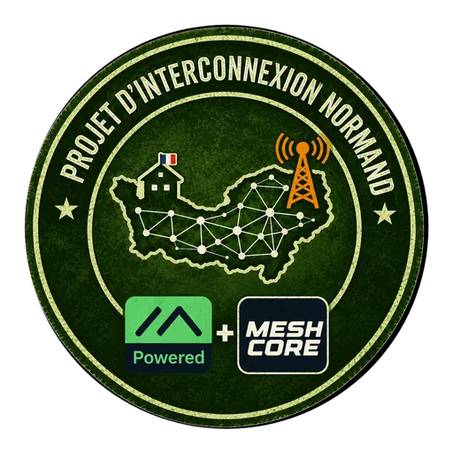

{{ post.category | default: 'Billet' | escape }}
{{ post.title | escape }}
{{ post.description | escape }}
Lire le billet
Projet d’Interconnexion NormandWiki open source MeshCore et Meshtastic {% include site-navigation.html %}Analyses, dossiers, explications et retours d’expérience autour de MeshCore, Meshtastic et des communications radio LoRa en Normandie.
Publication modérée : chaque billet est relu et validé par les administrateurs. Le formulaire crée une issue publique ; l’envoi ne publie rien automatiquement. Après relecture, l’ajout du label blog-publication-validée déclenche automatiquement la création et la publication du billet. N’y partagez aucune information sensible.
Proposer un billet pour le Blog
Suivre les publications : Flux RSS du Blog · Flux RSS des Actualités
Pour proposer une nouvelle du projet plutôt qu’un billet de blog, utilisez le formulaire réservé à la rubrique Actualités.
{% assign published_posts = site.pages | where_exp: "page", "page.path contains 'blog/'" %} {% assign has_posts = false %}{{ post.category | default: 'Billet' | escape }}
{{ post.description | escape }}
Lire le billetPour toute question sur le blog ou le wiki, contactez l’équipe via la page de contact, le Discord officiel ou l’e-mail du projet.